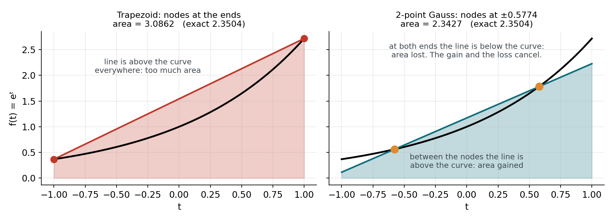
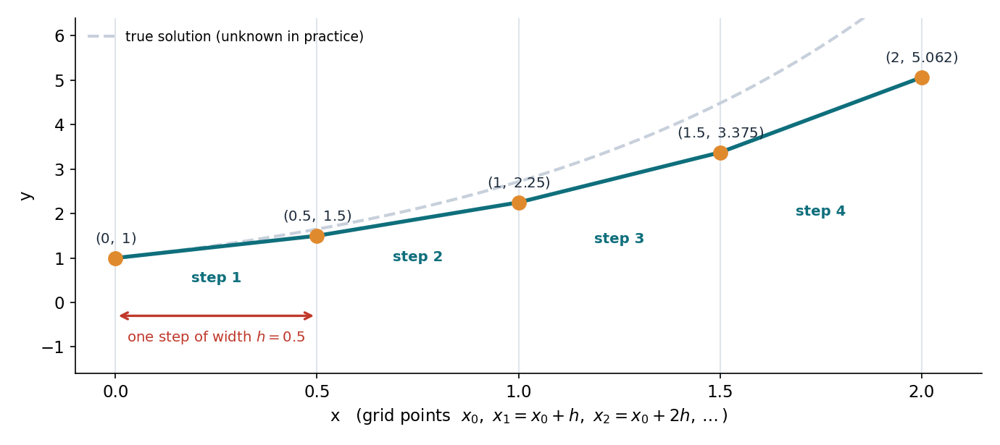

Numerical Integration & ODEs
Solve differential equations using numerical integration. We approximate definite integrals by summing simple shapes, then use the same idea to march the solution of an ordinary differential equation forward in time.
The definite integral as area
A definite integral is the area under the curve between two limits:
For complicated or non-elementary functions there is often no analytic antiderivative. Numerical integration (quadrature) approximates the area by breaking \([a,b]\) into subintervals and summing the areas of simple shapes — rectangles, trapezoids, or parabola-capped strips — that hug the curve.
All the rules below split the interval into \(n\) segments of width
5.1 The midpoint rule
Approximate each strip by a rectangle whose height is the function value at the midpoint of that strip:
- Compute \(\Delta x = (b-a)/n\).
- Find the midpoint of each subinterval.
- Evaluate \(f\) at every midpoint, sum, and multiply by \(\Delta x\).
Worked example
Approximate \(\int_0^{10} x^3\,dx\) with \(n=5\). Then \(\Delta x = 2\) and the midpoints are \(1,3,5,7,9\):
📈 See it: the integration demo after 5.3 (midpoint, \(x^3\), \(n=5\)).
5.2 The trapezoidal rule
Connect adjacent points with straight lines and sum the resulting trapezoids. The interior points are counted twice (each is shared by two trapezoids), giving the weighting \(1,2,2,\dots,2,1\):
Worked example
Approximate \(\int_0^{8} x^2\,dx\) with \(n=4\), so \(\Delta x = 2\) and grid points \(0,2,4,6,8\):
📈 See it: the integration demo after 5.3 (trapezoidal, \(x^2\), \(n=4\)).
Trapezoidal estimate = 176.0000
Source: Numerical Integration lecture.
5.3 Simpson's 1/3 rule
Instead of straight lines, fit a parabola through each pair of strips. This is far more accurate for smooth functions. With an even number of segments, the weighting pattern is \(1,4,2,4,\dots,4,1\):
📈 See the parabolas in the integration demo after this section (Simpson, \(x^2\), \(n=4\)).
Counting the weights: where do the 1, 4, 2 come from?
With \(n\) segments you have \(n+1\) points \(x_0,\dots,x_n\). Each parabola uses three points (two segments), so the segments must pair up: \(n\) must be even, i.e. you need an odd number of points (3, 5, 7, 9, …).
Every parabola contributes the same little pattern \(1,4,1\) (left end, middle, right end). Adding the patterns of neighbouring parabolas: the first and last points belong to only one parabola, so they keep weight \(1\); each middle point of a parabola (odd index) belongs to one parabola only, weight \(4\); each point where two parabolas meet (even interior index, like \(x_2\) when \(n=4\)) is counted by both, so \(1+1=\mathbf{2}\).
- Simpson's 3/8 rule (one cubic through all four points): \(\displaystyle I\approx\frac{3\Delta x}{8}\bigl[f_0+3f_1+3f_2+f_3\bigr]\), weights \(1,3,3,1\). It is also exact for cubics.
- Mix: Simpson's 1/3 on the first two segments, then one trapezoid on the last.
- Change \(n\): add or drop a point so that \(n\) is even.
- The weights must add up to \(3n\). Integrating \(f=1\) must give \(b-a=n\,\Delta x\), and \(\tfrac{\Delta x}{3}\sum w_i = n\Delta x\) forces \(\sum w_i=3n\). Check: \(1+4+2+4+1=12=3\cdot4\) ✓. But \(1+4+4+1=10\ne 9\) ✗ — that is how you can see that \(1,4,4,1\) is wrong. (For the 3/8 rule: \(1+3+3+1=8\) and the prefactor is \(3\Delta x/8\), so it works too.)
- Odd index = 4, even interior index = 2 (counting from \(x_0\)). In MATLAB, with
y(1)= \(f_0\), the 4's arey(2:2:end-1)and the 2's arey(3:2:end-2).
Simpson estimate = 170.6667
🎛 Demo: watch the area approximation tighten
This one demo replaces the pictures for 5.1 to 5.3. Pick a function and a rule, then change the number of segments \(n\). Watch the shaded shapes hug the curve and the error shrink. To reproduce the worked examples: midpoint with \(x^3\) and \(n=5\) (5.1), trapezoidal with \(x^2\) and \(n=4\) (5.2), Simpson with \(x^2\) and \(n=4\) (5.3).
5.4 Gaussian & adaptive quadrature
5.4a Gaussian quadrature: choose the sample points cleverly
Every rule so far has the same shape: sample the function at a few points, multiply each sample by a weight, add up. With equally spaced points we are free to choose only the weights. Gaussian quadrature also lets us choose where the points go. With \(n\) free positions and \(n\) free weights we have \(2n\) numbers to tune, and that is enough to integrate every polynomial up to degree \(2n-1\) exactly.
| \(n\) | nodes \(t_i\) | weights \(w_i\) | exact for degree up to |
|---|---|---|---|
| 1 | 0 | 2 | 1 |
| 2 | \(\pm 0.577350\) \(=\pm 1/\sqrt3\) | 1, 1 | 3 |
| 3 | 0, \(\pm 0.774597\) \(=\pm\sqrt{3/5}\) | \(8/9=0.888889\), \(5/9=0.555556\) | 5 |
| 4 | \(\pm 0.339981\), \(\pm 0.861136\) | 0.652145, 0.347855 | 7 |

Where do these numbers come from?
Take \(n=2\): unknowns \(w_1,w_2,t_1,t_2\). Demand that the rule is exact for \(1,\ t,\ t^2,\ t^3\), four equations for four unknowns:
The right-hand sides are \(\int_{-1}^{1}t^k\,dt\). By symmetry take \(t_2=-t_1\) and \(w_1=w_2\); the first equation gives \(w_1=w_2=1\), and the third becomes \(2t_1^2=\tfrac23\), so \(t_1=1/\sqrt3\approx0.5774\). For larger \(n\) the same idea works, and the nodes turn out to be the roots of the Legendre polynomial \(P_n\). (For example \(P_2(t)=\tfrac12(3t^2-1)\) has roots \(\pm1/\sqrt3\).) In practice you never solve this yourself: software stores the table.
Other intervals \([a,b]\)
Stretch and shift the standard interval with \(x=\tfrac{b-a}{2}\,t+\tfrac{a+b}{2}\). Then \(dx=\tfrac{b-a}{2}dt\), so
Worked example
Problem. Use 2-point Gauss to estimate \(\int_0^4 (x^2+1)\,dx\) (the integral from the practice section; exact value \(25.333\)).
Step 1: map the nodes to \([0,4]\). Here \(\tfrac{b-a}{2}=2\) and \(\tfrac{a+b}{2}=2\), so \(x_i=2t_i+2\): \(x_1=2-1.1547=0.8453\) and \(x_2=2+1.1547=3.1547\).
Step 2: evaluate. \(f(0.8453)=0.8453^2+1=1.7145\) and \(f(3.1547)=3.1547^2+1=10.9521\).
Step 3: weight and add. \(\tfrac{b-a}{2}(w_1f_1+w_2f_2)=2\,(1\cdot1.7145+1\cdot10.9521)=\mathbf{25.3333}\). This is exact, as promised, since \(x^2+1\) has degree \(2\le 3\). Only two function evaluations were needed.
🎛 Try it: Gauss versus equally spaced points
Choose a function and the number of evaluations \(n\). The orange dots are the Gauss nodes (the teal bars show their weights); the grey ticks are where the midpoint rule would sample. Compare the errors. With the polynomial \(x^5\), Gauss becomes exact as soon as \(n=3\), because \(2n-1=5\).
5.4b Adaptive quadrature: spend effort where the function is hard
What is the "wiggly part"?
A Simpson parabola (5.3) follows a curve well when the curve is smooth and gently bending. Where the curve bends sharply or oscillates quickly (a spike, a steep start like \(\sqrt{x}\) near \(0\), or fast wiggles), one parabola per strip cannot follow it, and the strip's error is large. Those are the wiggly (hard) parts. Mathematically the Simpson error on a strip of width \(h\) is about
so it is large when the strip is wide or the fourth derivative \(f^{(4)}\) (how violently the curve bends) is large. Shrinking \(h\) helps a lot (the factor \(h^5\)).
How do we find them, without knowing \(f^{(4)}\)?
We cannot compute \(f^{(4)}\) from a table of values, so we use a trick: compute each strip's area twice and compare. On a strip \([a,b]\):
- \(S_1\): Simpson with one parabola over the whole strip.
- \(S_2\): Simpson on the two halves, added together (a more accurate answer).
If the curve is smooth, \(S_1\) and \(S_2\) nearly agree. If the strip is wiggly, they disagree, and the disagreement \(|S_2-S_1|\) tells us how bad the error is. Halving the strip cuts the Simpson error by about \(2^4=16\), which gives the key estimate
The algorithm
- Choose a tolerance tol for the whole integral (for example \(10^{-6}\)).
- On the current strip compute \(S_1\) and \(S_2\).
- If \(|S_2-S_1|/15\) is below the strip's share of the tolerance, the strip is settled: keep \(S_2\) (and often improve it to \(S_2+(S_2-S_1)/15\)).
- Otherwise split the strip in half, give each half half of the tolerance, and repeat from step 2 on each half.
Smooth parts settle immediately with wide strips; wiggly parts keep splitting until the pieces are small enough. That is the whole idea.
Worked example: finding the hard part of \(\int_0^1\sqrt{x}\,dx\)
The exact answer is \(2/3\). The curve \(\sqrt{x}\) is very steep at \(x=0\) and gentle near \(x=1\). Compute \(S_1\) and \(S_2\) on each half of \([0,1]\):
| strip | \(S_1\) (one parabola) | \(S_2\) (two parabolas) | \(|S_2-S_1|/15\) | verdict |
|---|---|---|---|---|
| [0, 0.5] | 0.225592 | 0.232117 | 4.3 × 10⁻⁴ | wiggly: split again |
| [0.5, 1] | 0.430934 | 0.430962 | 1.9 × 10⁻⁶ | settled |
The left strip's estimate is about 200 times less reliable than the right one's, so the algorithm refines only near \(x=0\) and leaves \([0.5,1]\) alone. With tolerance \(10^{-6}\) the demo below needs only about 100 evaluations, while equal strips would need over 30,000.
🎛 Try it: adaptive strips versus equal strips
Pick a function and a tolerance. Narrow orange strips appear exactly where the function is hard, wide teal strips where it is smooth. The readout compares the number of function evaluations with plain Simpson using equal strips for the same accuracy. Try sin x (smooth everywhere): there is little to gain. Try √x or the spike: the saving is huge.
The same idea in MATLAB
integral combines both ideas of this section: on each strip it uses a Gauss–Kronrod rule (a Gauss rule with extra points that gives a free error estimate) and splits strips adaptively wherever the estimate is not yet accurate enough. You get high accuracy with few evaluations and you rarely write this yourself.integral = 0.88208139
We also handle improper integrals (infinite limits or integrable singularities) by transformation or by special adaptive handling near the trouble spot.
5.5 Ordinary differential equations
A differential equation relates an unknown function to its derivatives. A first-order initial-value problem has the form
The derivative tells us the slope of the solution at every point; the initial condition pins down which specific curve we are on. Integrating \(dy/dx\) alone gives a family of curves differing by a constant \(c\); the initial value selects one.
What does "march forward in steps of size \(h\)" mean?
We cannot write down the solution curve, but we know where it starts \((x_0,y_0)\) and we know its slope everywhere (that is what \(f\) gives). So we build the curve one short piece at a time, from left to right:
- Choose a step size \(h\): a small number, such as \(0.5\) or \(0.1\). It is the horizontal distance of one piece. The \(x\)-values we visit are equally spaced: \(x_0,\ x_1=x_0+h,\ x_2=x_0+2h,\ \dots\)
- Start at the known point \((x_0,y_0)\).
- Look up the slope there, \(f(x_0,y_0)\), and move one step to the right along that slope. That gives the next point \((x_1,y_1)\).
- Repeat from the new point: new slope, another step of width \(h\), next point \((x_2,y_2)\), and so on until we reach the \(x\) we want.
This "step, update the slope, step again" process is what marching forward means. A smaller \(h\) means more, shorter pieces, so the pieces follow the true curve more closely (but we need more steps). It is the same "add up many small pieces" idea as numerical integration.

5.6 Euler's method
The simplest one-step method. We know the solution's value \(y_i\) at \(x_i\), and the ODE tells us its slope there, \(f(x_i,y_i)\). So walk in a straight line with that slope for one step of width \(h\):
- \(y_i\): the current height (where we are now).
- \(f(x_i,y_i)\): the slope of the solution at the current point. Yes: \(f\) is the slope \(dy/dx\), given by the right-hand side of the ODE.
- \(h\): the step width (how far we move to the right).
- \(h\,f(x_i,y_i)\) = (width) × (slope) = the rise: how much \(y\) goes up over this step.
- \(y_{i+1}\): new height = old height + rise.
Two steps by hand: \(dy/dx=y,\ y(0)=1,\ h=0.5\)
Given: \(dy/dx=y,\ y(0)=1\), step size \(h=0.5\).
Find: an estimate of \(y(1)\) by Euler's method.
Solution.
Here \(f(x,y)=y\), so the slope at each point equals its current height. We need \(x=1\), which is two steps of size \(0.5\) from \(x_0=0\).
| step | \(x_i\) | \(y_i\) | slope \(f(x_i,y_i)=y_i\) | rise \(h\cdot\text{slope}\) | \(y_{i+1}=y_i+\text{rise}\) |
|---|---|---|---|---|---|
| 1 | 0 | 1 | 1 | 0.5 × 1 = 0.5 | 1.5 |
| 2 | 0.5 | 1.5 | 1.5 | 0.5 × 1.5 = 0.75 | 2.25 |
Written as equations, the two steps are:
Final answer (a single number, the estimated height of the solution at \(x=1\)):
Comment. The exact solution is \(y=e^x\), so \(y(1)=e\approx 2.718\) and the error is about \(0.47\) (roughly 17%). Euler underestimates here because the true curve bends upward while each step follows a straight line. A smaller \(h\) would shrink the error.
\(y(1)\approx \mathbf{2.25}\). The exact solution is \(y=e^x\), so \(y(1)=e\approx 2.718\). The error is \(2.718-2.25\approx 0.47\) (about 17%). Euler underestimates here because the true curve bends upward while each step follows a straight line. A smaller \(h\) would shrink this error.Continuing gives \(3.375\) at \(x=1.5\) and \(5.0625\) at \(x=2\), the points of the marching figure in 5.5. Each straight piece uses a slope computed at its left end. The true curve bends upward, so the straight pieces fall below it and the error builds up.
Each step uses a tangent-line approximation, so Euler accumulates error: it is first-order (halving \(h\) roughly halves the error). Smaller steps are more accurate but cost more evaluations. You can try this yourself in the demo right below this section ("Euler's method & step size").
x=0.00 y=1.000000 x=0.10 y=1.100000 x=0.20 y=1.210000 x=0.30 y=1.331000 x=0.40 y=1.464100 x=0.50 y=1.610510 x=0.60 y=1.771561 x=0.70 y=1.948717 x=0.80 y=2.143589 x=0.90 y=2.357948 x=1.00 y=2.593742 x=1.10 y=2.853117 x=1.20 y=3.138428 x=1.30 y=3.452271 x=1.40 y=3.797498 x=1.50 y=4.177248 x=1.60 y=4.594973 x=1.70 y=5.054470 x=1.80 y=5.559917 x=1.90 y=6.115909 x=2.00 y=6.727500 exact y(2.0) = 7.389056
Source: Numerical Integration of ODEs lecture.